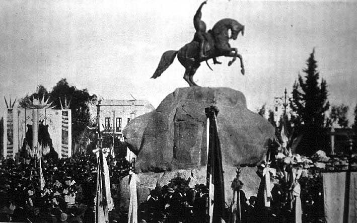

|
Statues, bodies, corpses
|
|  |
| Inauguración del monumento a San Martín en Mendoza, 1904 |
On the other side of the Cordillera, the end of the century saw an even greater urge to populate cities with statues of the nation´s founding fathers, to fend off what was seen as a threat to national sovereignty: mass immigration from various European countries, principally Italy, Spain, and Russia (an initiative from the Italian community to erect a monument to Garibaldi in Buenos Aires sparked a heated debate in the National Congress; finally it was allowed only in the off-centre Parque Tres de Febrero). Argentina, a new, culturalist strand of nationalism argued, had to urgently inculcate a patriotic sense of belonging in a population with little interest in the founding epic of the nation, otherwise it would fall prey to the expansionist desires of the European empires. Ironically, what was now perceived to be lacking was the very 'popular tradition' that liberal writers of mid-century such as Sarmiento, Echeverría and Mármol had rejected as 'barbarian' and in need to be replaced or corrected by the influx of European immigration. The paradoxical question, then, was how to transform a discourse of suppressing the popular into a popular tradition. Although the project of erecting a national pantheon failed –it was premature, the exploratory commission under president Roca concluded, to settle on a definite group of founders of the nation–, historical consensus was eventually established on the figures of San Martín, Belgrano, Moreno, and Rivadavia.
Statues of Lavalle and Paz were erected in 1887 at Buenos Aires and Córdoba, respectively; the year after a project for a monument to the Ejército de los Andes at Mendoza was presented to Congress by, among others, Lucio V. Mansilla, Estanislao Zeballos and José María Ramos Mejía. Also in 1888, Congress approved projects for monuments to Narciso Laprida and Fray Justo Santa María de Oro (both at San Juan) and a column in memory of the battle of San Lorenzo; in 1889, on occasion of the first anniversary of Sarmiento´s death, the creation of a monument was ordered by presidential decree. In the same year, a municipal contest for a national pantheon was advertised, as well as for a triumphal arch in memory of the battle of Caseros; the historian Vicente Fidel López was commissioned to draw a list of locations to be provided with commemorative plates, and the National Historical Museum (then still a municipal institution) was inaugurated. In 1890, the mayor of Buenos Aires asked permission from Congress to erect monuments to, among others, Juan de Garay, the Viceroys Vértiz and Liniers, independence generals Alvear, Las Heras and Brown, as well as poets and politicians Vicente López, Saavedra, and Dorrego.